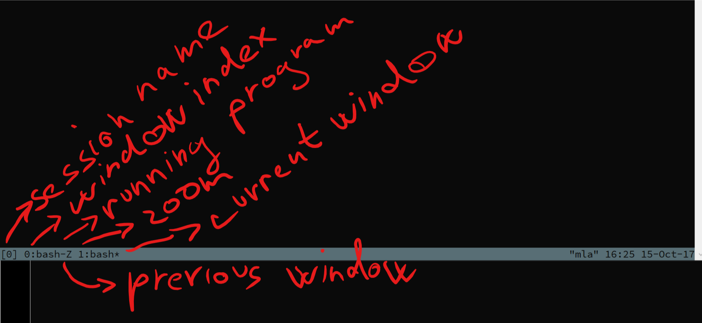

Table of Contents
1 Workshop Tmux for beginners
1.1 Motivation and terminology
- Client server architecture
- Plaform independent
- Memory efficient
- Supports collaboration
- Ability to detach and attach sessions
1.2 Installation
On Mac:
$ brew install tmux
or on (Ubuntu, Debian etc)
$ sudo apt-get install tmux
or manual build
$ wget https://github.com/tmux/tmux/releases/download/2.6/tmux-2.6.tar.gz $ tar xvf tmux-2.6.tar.gz $ cd tmux-2.6/ $ sudo apt-get install -y exuberant-ctags cmake libevent-dev libncurses5-dev $ ./configure && make $ sudo make install
then re-run your terminal
1.3 First run and closing
1.3.1 Start
$ tmux
1.3.2 End
$ exit
1.4 Statusbar

1.5 Windows and Panes - Sessions
1.6 Commands, prefix key and shortcuts
1.6.1 Prefix key
Ctrl + b -> short version: C-b
1.6.2 Emacs or vi mode
Default emacs but it also depends on global $EDITOR setting in your shell.
1.6.3 Help
C-b ?
1.6.4 Tmux "command line"
C-b :
Try:
C-b :list-windows
Press q to quit.
1.6.5 Commands
| Command | Shortcut | Description |
|---|---|---|
| tmux new -s dev | Create new session "dev" | |
| tmux attach -t dev | Attach to dev session | |
| tmux detach-client -s dev | <P> d | Detach from session |
| <P> : | tmux command line |
1.6.6 Shortcuts
1.7 Next steps
1.7.1 Configuration
~/.tmux.conf
# Bindings {{{
# Remap prefix
unbind C-b
set -g prefix C-Space
# Quick key for moving back to the previous window
bind-key L last-window
# Vim style bindings for pane movement
bind-key -r h select-pane -L
bind-key -r j select-pane -D
bind-key -r k select-pane -U
bind-key -r l select-pane -R
# Fix issue with tmux repeating -r the arrow directions (meaning when you switch panes you can accidentally jump back to the other pane again)
bind-key Up select-pane -U
bind-key Down select-pane -D
bind-key Left select-pane -L
bind-key Right select-pane -R
# Make splitting windows easier
bind-key v split-window -h
bind-key s split-window -v
# Reload tmux config
# Same as in command mode :source-file ~/tmux.conf
# Or outside of tmux with `tmux source-file ~/tmux.conf`
bind-key r source-file ~/.tmux.conf
# Allow Ctrl+k to clear the history
bind-key -n C-k clear-history
# Make resizing panes easier
bind-key < resize-pane -L 5
bind-key > resize-pane -R 5
bind-key + resize-pane -U 5
bind-key - resize-pane -D 5
bind-key = select-layout even-vertical
bind-key | select-layout even-horizontal
# }}}
# Settings {{{
# Ensure terminal starts with its own colour scheme (defined below)
set -g default-terminal "screen-256color"
set-window-option -g utf8 on
# Note: if you have EDITOR=vim set
# then the following two settings aren't needed
# Use Vi style key bindings to move around command line mode
set-option -g status-keys vi
# Use Vi style key bindings to move around copy mode
setw -g mode-keys vi
# Remove delay when pressing esc in Vim
set -sg escape-time 0
# Prevent tmux from renaming the tab when processes change
# e.g. if you're in a directory which is a git repo and you fire up Pry then
# tmux would first rename the tab to 'java' (for Pry) then 'git' when exiting Pry, then finally back to 'zsh'
set-option -g allow-rename off
# Tells tmux up front what shell to expect
set-option -g default-shell /bin/zsh
# Set base to 1
set -g base-index 1
# Enable UTF-8 support in status bar
set -g status on
set -g status-utf8 on
# Increase scrollback lines
set -g history-limit 30000
# Renumber windows automatically after removing a window
# Prevents my OCD and means I don't have to manually run {move|swap}-window
set-option -g renumber-windows on
# Colour reference...
# Light Blue = 31
# Dark Grey = 234
# Light Grey = 240
# White = 254
# sets right side of the status bar to look bit nicer
set -g status-right '#[fg=colour234,bg=white,nobold,nounderscore,noitalics]#[fg=colour250,bg=colour234] %a #[fg=colour247,bg=colour234] #[fg=colour247,bg=colour234] %b %d %R #[fg=colour252,bg=colour234,nobold,nounderscore,noitalics]#[fg=red,bg=colour234]#[fg=white,bg=red] #H'
# sets status bar background colour
set -g status-bg white
# positions each window name to the left most edge of the status bar
set -g status-justify 'left'
# sets default pane border colour
set -g pane-border-fg white
# highlights border of current pane
set -g pane-active-border-fg red
# sets status bar background colour when executing a command via command-line mode
set -g message-bg red
# sets colour of status bar font in command-line mode
set -g message-fg white
# adds separator (in this case some extra breathing space around the list of windows)
setw -g window-status-separator ' '
# sets design of current window listed in the status bar
setw -g window-status-current-format '#[fg=colour231,bg=colour31,bold] #I #W #[fg=colour31,bg=white,nobold,nounderscore,noitalics]'
# Explanation of settings I don't use...
#
# sets background colour of status bar when you try to ESC command-line mode:
# set -g message-command-bg 'colour31'
#
# sets colour of status bar font in default mode:
# setw -g window-status-fg black
#
# sets the background colour of the window listed in the status bar:
# setw -g window-status-bg 'colour234'
#
# sets default design around each window listed in the status bar:
# setw -g window-status-format '#[fg=colour234,bg=colour234,nobold,nounderscore,noitalics]#[default] #I #W #[fg=colour234,bg=colour234,nobold,nounderscore,noitalics]'
#
# sets left side information of status bar:
# set -g status-left '#[fg=colour16,bg=colour254,bold] #S #[fg=colour254,bg=colour240,nobold,nounderscore,noitalics]#[fg=colour237,bg=colour240] #F #[fg=colour240,bg=colour236,nobold,nounderscore,noitalics]#[fg=colour247,bg=colour236] #W #[fg=colour236,bg=colour234,nobold,nounderscore,noitalics]'
# }}}
https://github.com/Integralist/ProVim/blob/master/.tmux.conf
1.7.2 Session management
gem install tmuxinator